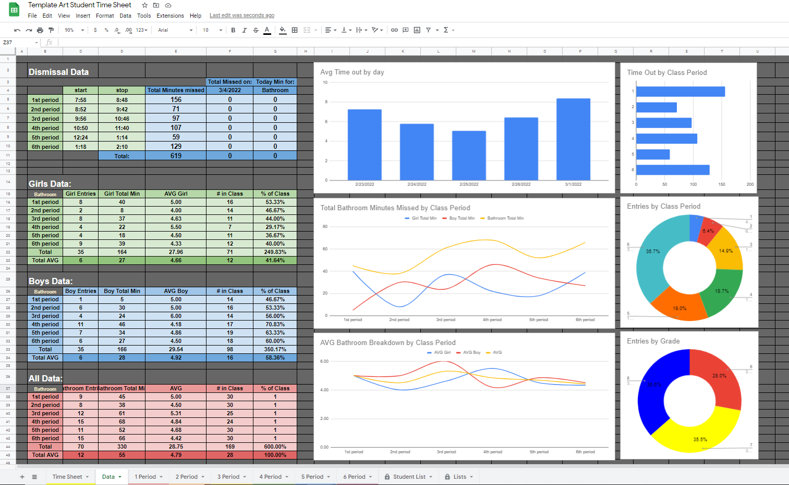
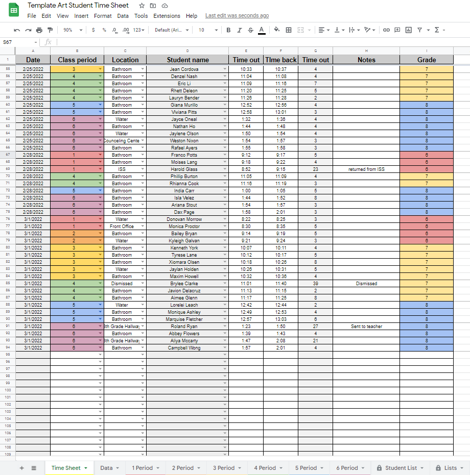
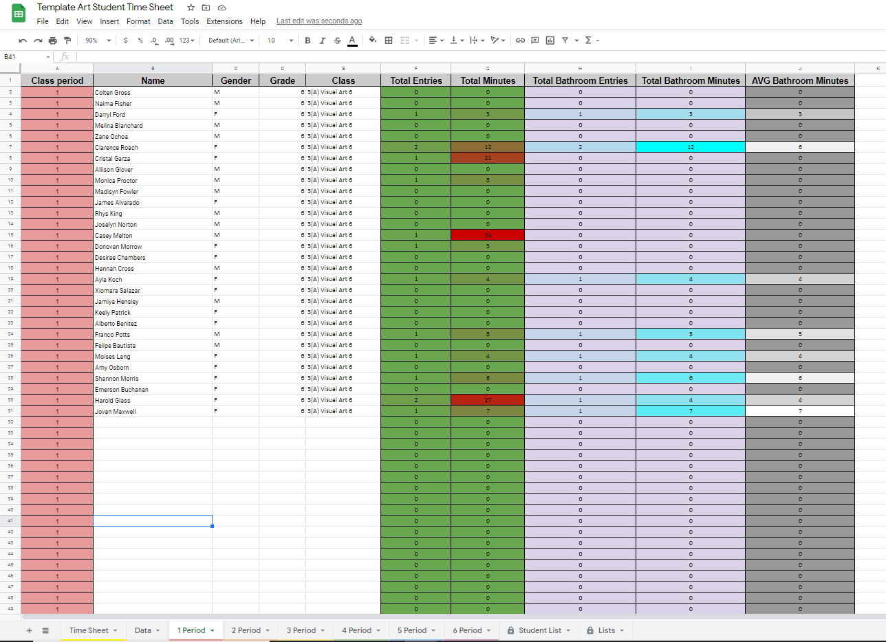

Following Student Time in and Out of Class
Project Overview:
This project was intended to record and analyze student time in and out of my classroom. This data would help ide ntify trends in abuse of privileges, or identify students who spend an excess amount of time unnecessarily in other teachers classrooms. This data can then be compared to student achievement to identify if there is a correlation between bathroom breaks and student achievement.
This is an ongoing project that will be updated periodically as new information is collected.
Step 1: Data Input
Data is collected and put into the computer by the teacher. This takes a matter of seconds and can be added after the fact using a sign in and out sheet. Student names, class periods, and locations are already in lists. This allows the teachers to quickly add student data.
Below is a portion of the Google Form that was used for data collection:

Step 2: Student Classes
This data can be quickly added from a teacher's class roster. Once added the student names are accessible in the drop down data collection tab. As data is provided it is automatically associated with these class tabs. This allows the teacher to quickly see and identify trends by student and class.
Please note all data was also adjusted to remove student and teacher specifics for this posting. All student names are randomized student names.

Step 3: Data Visualization
Once data was collected a visual dashboard was created in order to visualize the data for easier consumption. The goal of this dashboard was to quickly identify trends by class period, gender, and time of day. The ultimate goal is to help limit student abuse of hallway passes and keep track of student data in case it is needed to identify who was where and when.
Step 4: Future Additions
I would like to create an entry form to create an easier to enter format that could be provided to students to complete from their own personal devices. This would allow students to carry the work load off teh teacher and allow the teacher to focus on providing students with the tools and information they need to master the subject matter.
Another addition would be to connect multiple classrooms data collection. This would allow teachers to see the total times in and out of class throughout the school day. This would help to eliminate students who attempt to utilize bathroom passes in every class throughout the school day. This would also provide administration with the ability to see all students currently out of the classroom at any given moment.